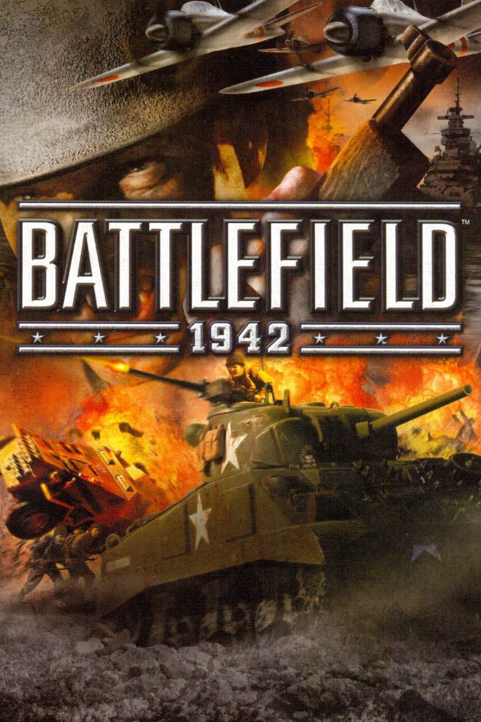

|  | |
| Playtime | Not Played |
| Last Activity | Never |
| Added | 5/7/2025 0:47:28 |
| Modified | 5/7/2025 0:48:13 |
| Completion Status | Not Played |
| Library | Playnite |
| Source | Steam |
| Platform | $PC (Windows) |
| Release Date | 9/10/2002 |
| Community Score | |
| Critic Score | 89 |
| User Score | |
| Genre | Action FPS Shooter |
| Developer | Aspyr Media DICE |
| Publisher | Electronic Arts |
| Feature | Controller Support Multiplayer Single Player |
| Links | PCGamingWiki Official site HowLongToBeat IGDB StrategyWiki MobyGames Wikipedia WSGF |
| Tag | Automobile Direct control First-Person Flight Naval/watercraft Realistic Real-Time Refractor 2 Tank Transport Truck World War II |
Battlefield 1942 is a 2002 first-person shooter game developed by Digital Illusions CE and published by Electronic Arts for Microsoft Windows and Mac OS X. The game can be played in single-player mode against the video game AI or in multiplayer mode against players on the Internet or in a local area network. It is a popular platform for mod developers, with many released modifications that alter the gameplay and theme.
In-game, players assume the role of one of five classes of infantry: Scout, Assault, Anti-Tank, Medic, and Engineer. Players also have the ability to fly various World War II fighter aircraft and bombers, navigate capital ships, submarines, and aircraft carriers, man coastal artillery defenses, drive tanks, APCs and jeeps, and take control of anti-aircraft guns and mounted machine guns.
Each battle takes place on one of several maps located in a variety of places and famous battlefields in all of the major theaters of World War II: the Pacific, European, North African, Eastern, and Italian Fronts. Combat is between the Axis powers and the Allies. The location determines which nation-specific armies are used (for example, on the Wake Island map, it is Japan versus the United States, while on the El Alamein map, it is Germany versus the United Kingdom). The maps in Battlefield 1942 are based on real battles and are somewhat realistically portrayed.
Upon release, Battlefield 1942 received generally favorable reviews, with particular praise directed towards the innovative gameplay, multiplayer, and World War II theme. The game went on to perform well commercially, with over 3 million copies sold by 2004. Since its release, the game has spawned numerous sequels and spin-offs, which became part of what ultimately would become the Battlefield game series. Battlefield 1942 is retrospectively considered to be one of the best video games of all time.
The gameplay of Battlefield 1942 generally has a more co-operative focus than previous games of this nature, as it is not only important to kill the opposition but to also hold certain "control points" around the map. Capturing control points allows the team to reinforce itself by enabling players and vehicles to spawn in a given area. Additionally, capturing and controlling control points also reduces enemy reinforcements. Battlefield 1942 was one of the first mainstream FPS games to actively encourage teamwork and coordination over individual "lone wolf" style gameplay.
The default gameplay mode, Conquest, centers on capturing "control points" which serve as locations for respawning, often referred to as "spawn points". Rounds have a time limit and each team starts the round with a set number of tickets which are consumed when members of that team respawn. If a team does not control any spawn points, members cannot spawn unless the remaining living members capture one. If a team reaches zero tickets, members of that team cannot respawn for the rest of the match.
A team loses tickets when its members are killed, but also at a fixed rate when the other team holds a greater number of capture points; the greater the disparity in held capture points, the greater the rate of ticket loss to the disadvantaged side, which encourages teams to focus on taking and defending control points. A match is won by killing all members of the opposing team when they either have no remaining tickets, or no available spawn points. Sometimes players on a losing team may hide instead of fight when their team's tickets and respawn points are reduced to zero, forcing the winning team to methodically search for them in order to end the round before the round timer expires.
The player can choose to play as either the Allied team or the Axis team. The Allies consist of the United States, the United Kingdom, Canada and the Soviet Union, while the Axis consists of Nazi Germany and Imperial Japan. Regardless of which nation is chosen by the player, there are five different infantry roles the player can select from: Scout, Assault, Medic, Anti-tank, and Engineer.
Each role has its own strength and weakness. For example, the scout role has long-range surveillance, high stopping power and the ability to provide spotting for artillery shelling by another player. Assault is the primary anti-infantry role, focused on directly engaging other players at short and medium range. The Anti-tank role specializes in attacking tanks and other vehicles, but their main weapon is inaccurate against moving enemy infantry. The Medic role has the ability to heal players including themselves, but their sub-machine gun has less stopping power than the Assault class's rifle. The Engineer has the ability to repair damaged vehicles and stationary weapons, and they also have the ability to deploy explosives, which are highly effective against both enemy infantry and vehicles, and land mines, which destroy enemy vehicles on contact.
In 2000, DICE acquired Refraction Games (developers of Codename Eagle) and inherited the in-development Battlefield 1942. The game was originally proposed by DICE as a GameCube exclusive. Though satisfied with the proposal, negotiations never made it further because Nintendo had no online strategy. The game was developed by a team of 14 people at Digital Illusions. Battlefield 1942 was built on the formula of the less well-known and successful Codename Eagle video game, set in an alternate history World War I. It featured single and multiplayer modes. The earlier Refractor 1 engine had more arcade-style physics and a less realistic focus than its successor, Refractor 2, which was used in Battlefield 2. A Macintosh-compatible version of Battlefield 1942 was made and released by Aspyr Media in mid-2004. An Xbox version of the game was also announced in early 2001 but was cancelled almost two years later so Electronic Arts could more closely work on an expansion pack for the PC.
Two expansion packs would be released for Battlefield 1942, Battlefield 1942: The Road to Rome (adding the Italian Front) and Battlefield 1942: Secret Weapons of WWII, both adding various new gameplay modes, maps, and game concepts. The Road to Rome focuses on the Italian battles, allowing players to play as the Free French forces or as the Royal Italian Army. Secret Weapons of WWII focuses on prototypical, experimental, and rarely used weapons and vehicles (such as jet packs), and added subfactions to the German and British Armies, the German Elite Troops and British Commandos. Accompany each were patches to the base game that fixed bugs, and added extra content (such as the Battle of Britain map) to the base game. Battlefield 1942 Deluxe Edition includes the original game and Battlefield 1942: The Road To Rome, and the Battlefield 1942: World War II Anthology added Battlefield 1942: Secret Weapons of WWII expansion pack. Battlefield 1942: The Complete Collection later added Battlefield Vietnam and Battlefield Vietnam WWII Mod.
In the United States, Battlefield 1942 sold 680,000 copies and earned $27.1 million by August 2006. At the time, this led Edge to rank it as the country's 18th best-selling computer game released since January 2000. Combined sales of all Battlefield computer games, including Battlefield 1942, had reached 2.7 million units in the United States by August 2006. In December 2002, the game received a "Gold" sales award from the Verband der Unterhaltungssoftware Deutschland (VUD), indicating sales of at least 100,000 units across Germany, Austria and Switzerland. The game sold more than 3 million copies by July 2004.
The game received "generally favorable reviews", just one point shy of "universal acclaim", according to the review aggregation website Metacritic. At 6th annual Interactive Achievement Awards, Battlefield 1942 received awards for Online Gameplay, Innovation in PC Gaming, PC Game of the Year, and Game of the Year. In March 2010 Battlefield 1942 was awarded with "Swedish game of the decade" award at the computer game gala hosted by Swedish Games Industry.
Scott Osborne of GameSpot called it a "comic book version of WWII." The publication later named it the best computer game of September 2002. Steve Butts of IGN praised the multiplayer, but said that "the single-player game leaves much to be desired."
PC Gamer US and Computer Games Magazine named Battlefield 1942 the best multiplayer computer game and best overall computer game of 2002; it tied with No One Lives Forever 2 for the latter award in Computer Games Magazine. It also won GameSpot's annual "Best Multiplayer Action Game on PC" and "Biggest Surprise on PC" awards, and was nominated in the publication's "Best Graphics (Technical) on PC" and "Game of the Year on PC" categories. PC Gamer US's editors hailed it as "the realization of our 'dream PC game' — multiplayer battles in which every interesting element of combat is playable by human teammates and opponents."
The Academy of Interactive Arts & Sciences awarded Battlefield 1942 with four honors at the 6th Annual Interactive Achievement Awards (now known as the D.I.C.E. Awards): "Game of the Year", "Computer Game of the Year", "Outstanding Innovation in Computer Gaming", and "Online Gameplay of the Year"; it also received a nomination for "Outstanding Achievement in Game Design".
Battlefield 1942 was the first in the Battlefield series and would go on to spawn many sequels and spin-offs set in different eras of war. Releases included Battlefield Vietnam in 2004, Battlefield 2 in 2005, Battlefield 2142 in 2006, Battlefield 1943 in 2009, Battlefield: Bad Company in 2008 and the 2010 sequel, Battlefield 3 in 2011, Battlefield 4 in 2013, Battlefield Hardline, a cops-and-robbers spinoff, in 2015, Battlefield 1, a World War I based title, in 2016, Battlefield V, the first time since Battlefield 1943 that the series saw a return to a World War II theater of operations, and the first since Battlefield 1942 set outside the Pacific Ocean theater of World War II[citation needed] in 2018, and Battlefield 2042 in 2021. All of these releases have been overseen by DICE, with Hardline being developed by Visceral Games, with additional developers like Criterion Games, EA Gothenburg and Ripple Effect Studios providing additional development.
An October 2004 public release from EA noted the game's modding community.
Like Half-Life and some other popular FPS games, Battlefield 1942 spawned a number of mods. Most did not progress very far and were abandoned without ever producing a public release. Some are very limited and just include some gameplay changes or even a different loading screen while others are total conversions that modify content and gameplay extensively. A few mods have become popular and are nearly games in their own right. Early modifications of Battlefield 1942 were produced without a software development kit. Later a "Mod Development Kit", Battlefield Mod Development Toolkit, was produced by EA to help the development of mods. With the release of the Battlefield 1942 sequel Battlefield Vietnam and Battlefield 2, some mods have released a new version or have continued development with that game. Battlefield Vietnam uses an updated version of the Refractor 2 game engine. Some mods have switched to the computer games Söldner: Secret Wars, Half-Life 2 while others were releasing a standalone game after completed mod development for Battlefield 1942 (Eve of Destruction - REDUX and FinnWars).